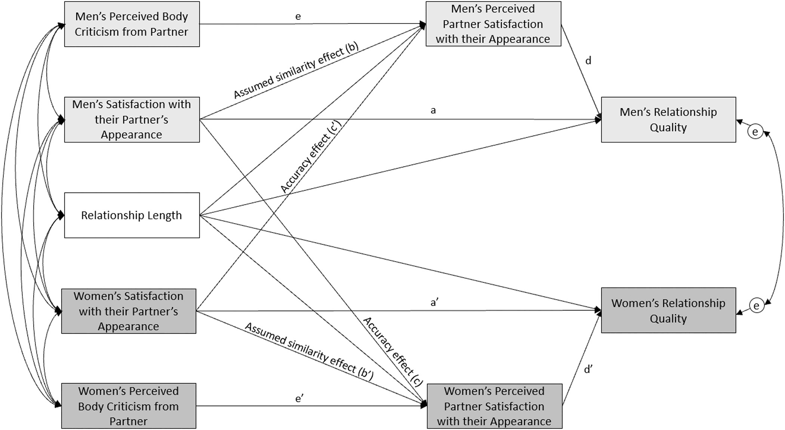
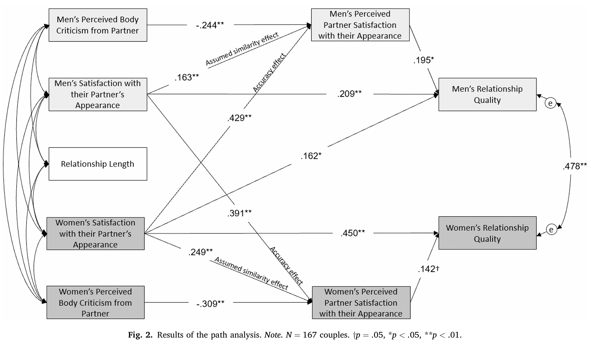

1 引言
- 使用APIM（actor-partner interdependence model）模型检验异性恋中身体外貌和吸引力与关系满意度的影响
- 在控制伴侣间身体批评（body-related criticism）后，对伴侣外貌的满意度，以及认为伴侣满意自己外貌的知觉，是否分别对关系质量具有独特贡献
- 对伴侣外貌满意度与多种积极结果有关
- 在两性间，伴侣身体吸引力均与关系满意度或关系承诺正相关
- 有研究发现对男性影响更大，也有研究发现没性别差异
- 在两性间，感知伴侣对自身外貌满意度与关系满意度、自我外貌满意度等正相关
- 准确性与偏差模型（Accuracy and Bias Model）：个体会把自己的感受投射到伴侣身上
- 假设相似效应（Assumed Similarity Effect）：A满意B，倾向于认为B也满意自己
- 准确性效应（Accuracy Effect）：B的确满意A，那么A能准确识别B对A的感知
- 准确性与偏差模型（Accuracy and Bias Model）：个体会把自己的感受投射到伴侣身上
- 身体批评与感知伴侣外貌满意度
- 身体批评与各种负面结果（关系不满意、关系不稳定等）正相关
- 女性更多的是关系不满意
- 男性更多的是关系不稳定
- 较少研究考察男性在关系中对身体批评的觉知
- 身体批评与各种负面结果（关系不满意、关系不稳定等）正相关
- 本研究旨在检验：不同性别下，伴侣的身体批评是否与感知伴侣对自身外貌满意度有关，以及这种感知和关系质量的联系
- H1：伴侣双方在对彼此外貌满意度、感知伴侣对自身外貌满意度以及感知伴侣身体批评方面，预计具有小到中等程度的相似性
- H2：对伴侣外貌满意度预计与感知伴侣对自身外貌满意度相关，即假设相似效应（ 图 1 中的b和b’）
- H3：对伴侣外貌满意度预计与伴侣对该满意度的感知相关，即准确性效应（路径c和c’）
- H4：对伴侣外貌满意度预计与关系质量正相关（路径a和a’）
- H5：感知伴侣对自身外貌满意度预计也与关系质量正相关（路径d和d’）
- H6：感知伴侣身体批评预计与感知伴侣对自身外貌满意度负相关（路径e和e’）

2 方法
2.1 被试
- 加拿大魁北克省的167对异性恋伴侣（关系6个月以上）
- 双方独立完成问卷
- 平均年龄均在44岁左右，平均关系时长10年9个月
2.2 测量
- 人口统计信息包括年龄、教育、职业状态、家庭收入、族裔及关系状态；同时测量关系时长、是否育有子女以及双方各自的减重意愿
- 对伴侣外貌满意度
- Weight and Dieting Questionnaire的子量表改编
- How would you rate your spouse’s or partner’s overall level of attractiveness?
- How satisfied are you with your spouse’s or partner’s weight and body shape?
- Weight and Dieting Questionnaire的子量表改编
- 感知伴侣对自身外貌满意度
- 相同问卷改编
- How would your partner rate your overall level of attractiveness?
- How satisfied is your partner with your weight and body shape?
- 相同问卷改编
- 感知伴侣身体批评
- 相同问卷改编
- How often does your partner make negative or critical comments about your weight or body shape?
- Does your partner suggest that you should change your weight or body shape?
- 相同问卷改编
- 关系质量
- six-item Quality of Marriage Index
2.3 分析方法
- 单向随机模型检验组内相关（仅截距）
- 结构方程模型检验APIM
3 结果
- 伴侣内部在外貌满意度和身体批评感知上具有相似性（组内相关大）
- 对SEM进行修正直到完全符合检验标准
- 新增：女性对男性伴侣外貌满意度 → 男性关系质量
- 删除：关系时长 → 两性感知伴侣对自身外貌满意度；关系时长 → 两性关系质量

- 男性
- 感知伴侣身体批评与感知伴侣对自身外貌满意度负相关（H6）
- 对伴侣外貌满意度与男性、女性感知伴侣对自身外貌满意度正相关（H2和3）
- 对伴侣外貌满意度与男性关系质量正相关（H4）
- 感知伴侣对自身外貌满意度与男性关系质量正相关（H5）
- 女性
- 感知伴侣身体批评与感知伴侣对自身外貌满意度负相关（H6）
- 对伴侣外貌满意度与男性、女性感知伴侣对自身外貌满意度正相关（H2和3）
- 对伴侣外貌满意度与男性、女性关系质量正相关（H4）
- 感知伴侣对自身外貌满意度与女性关系质量正相关边缘显著（H5）
- 间接效应
- 男性感知伴侣身体批评 → 男性感知伴侣对自身外貌满意度 → 男性关系质量
- 女性对伴侣外貌满意度 → 男性感知伴侣对自身外貌满意度 → 男性关系质量
- 补充分析
- 控制年龄和减重意愿后，结果不变
4 讨论
- 假设相似效应
- 选择过程：选择相似外貌
- 社会化过程：相互影响变得相似
- 准确性效应
- 个体并非完全依靠投射，也能在一定程度上准确判断伴侣的真实评价
- 负面评价可能降低准确性
- 女性到男性的伴侣效应（女性对伴侣外貌满意度与男性关系质量正相关）
- 女性更主动欣赏，投入更多
- 身体批评并非直接影响，而是中介
- 男女都有
5 优势和局限
- APIM处理双方
- 横断面设计无因果
- 双向关系无法排除
- 测量较短
- 样本局限
- 模型修改
- 样本时效性不足
参考文献
Fruchier, T., Guimond, F.-A., Gagnon-Girouard, M.-P., Lavigne, G., Rochette, S., & Carbonneau, N. (2025). Satisfaction with partner’s appearance, body criticism, and relationship quality in heterosexual couples: A dyadic study. Body Image, 53, 101896. https://doi.org/https://doi.org/10.1016/j.bodyim.2025.101896